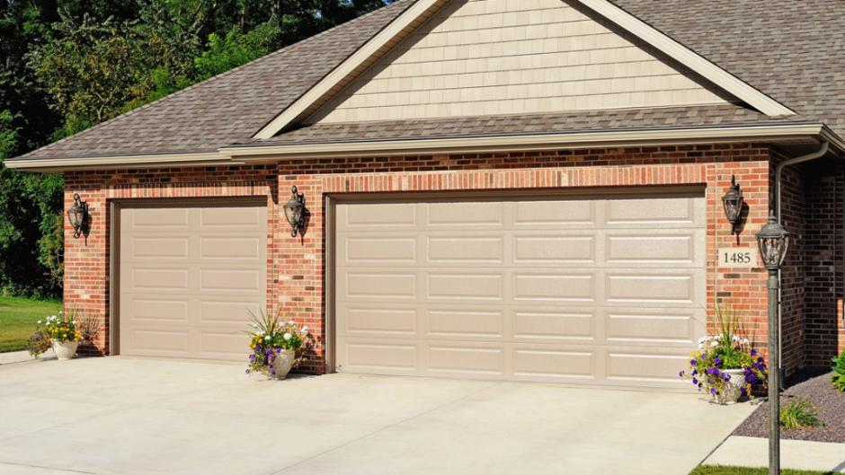

Tri-County Garage Door
Here at Tri-County Garage Door, Inc. we offer repair, service, and replacement. We service all makes and models of garage door openers, as well as broken springs, rollers, cables, etc.. We repair them all for residential and commercial customers.
Testimonials
Jennifer R. says...
"Great job on the new garage door. Thank You so much. I will use your company in the future and recommend you to my friends. My only regret is not calling you sooner."
Mary A. says...
"These folks are awesome!! Excellent products, excellent customer service, very reasonable prices. I will recommend to everyone! Thank you so much!"
Jim B. says...
"Purchased a door through Costco and these folks were sent to measure, order and install. They were extremely efficient and showed up each time exactly when they said they would."